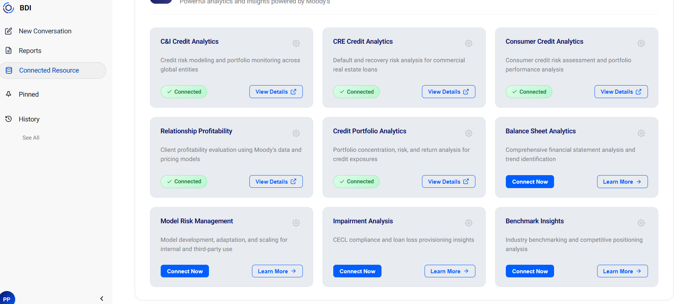

Streamline prep and decision readiness.
Improve quality across every decision forum.
Fits existing workflows and committees.
Leverage current analytics investments fully.
Banks often optimize one workflow, but decisions happen across many forums. BDI unifies origination, structuring, credit committee, portfolio, capital, and strategy into one decision intelligence layer.
